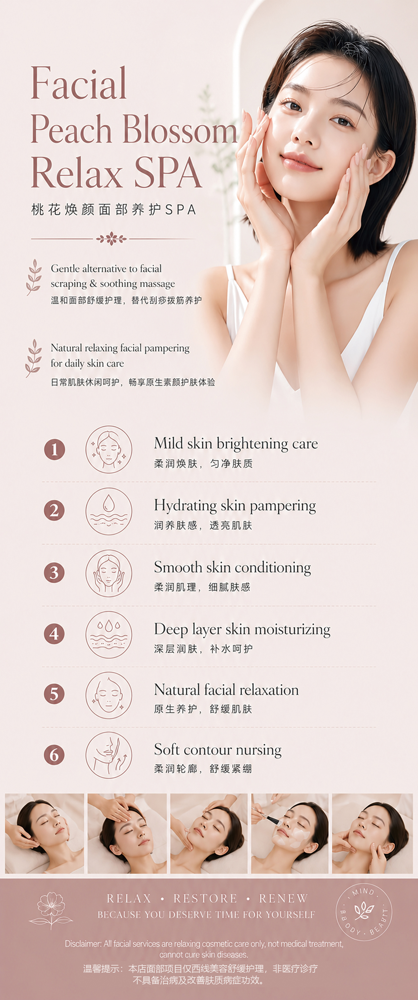

Treatments
Facial Spa
Gentle facial pampering with skin brightening, deep hydration, smooth conditioning and natural relaxation — crafted for daily skin care and lasting radiance.
About the Treatment
A Facial That Nourishes as Much as It Relaxes
Our Facial Spa is built on a simple belief — that the skin responds best when it is treated gently, consistently, and with care. Rather than aggressive peels or high-intensity interventions, this treatment works with your skin's natural rhythms to restore clarity, softness, and a natural luminosity from within.
The Peach Blossom Facial draws on a tradition of botanical skincare — combining skin-brightening active botanicals with deep hydration techniques, gentle conditioning massage, and a custom masking protocol. The result is skin that looks and feels genuinely healthy: supple, even-toned, calm, and radiant.
It is suitable for all skin types — particularly those with dull, uneven, or sensitive skin who want visible improvement without discomfort or downtime. Regular sessions progressively improve skin texture, hydration reserve, and the skin's ability to defend itself against environmental stress.
- Dull, uneven, or lacklustre complexion
- Dry patches and rough skin texture
- Early signs of hyperpigmentation
- Sensitive skin needing a gentle approach
- General skin maintenance and daily care
- Pre-event brightening and radiance boost

Treatment Benefits
What You Can Expect
Brighter, softer, more hydrated skin — visible from the first session and improving with each visit.
Skin Brightening
Botanical brightening actives gently inhibit melanin overproduction and reduce the appearance of uneven tone and dark spots, revealing a clearer, more luminous complexion over consistent sessions.
Deep Hydration
Layered hydration techniques — including masking, massage, and serum infusion — deliver moisture at multiple depths of the skin, producing a lasting plumpness and suppleness that topical products alone cannot achieve.
Smooth Skin Conditioning
Gentle exfoliation and conditioning massage improve skin texture progressively, softening rough patches and smoothing uneven surface irregularities without disrupting the skin barrier.
Natural Relaxation
The facial massage component engages facial acupressure points and lymphatic pathways — reducing puffiness, easing jaw tension, and leaving the face visibly more relaxed and contoured after each session.
Improved Skin Resilience
Regular sessions strengthen the skin's moisture barrier and improve its ability to cope with environmental stressors — UV exposure, pollution, and air conditioning — keeping skin calmer and more balanced day to day.
Zero Downtime
The Facial Spa is completely non-invasive with no redness, peeling, or recovery period. You can return to your day immediately — often looking better than when you arrived.
The Process
How It Works
A thoughtful, layered protocol that cleanses, brightens, hydrates, and restores in one continuous ritual.
-
01
Skin Analysis & Consultation
Your session begins with a thorough skin analysis to assess your current hydration levels, tone evenness, texture, and sensitivity. Your therapist discusses your daily skincare routine, lifestyle, and specific concerns — and uses this to guide the product selection and pressure techniques throughout your treatment.
-
02
Deep Cleanse & Preparation
A multi-step cleanse removes surface impurities, sunscreen, and excess sebum — preparing the skin to receive the active ingredients in subsequent steps. A light enzyme exfoliation loosens dead skin cells gently, without abrasion, so that the brightening and hydration steps that follow can penetrate more effectively.
-
03
Brightening Serum Infusion & Massage
A concentrated brightening serum is applied and worked into the skin through a specialised facial massage technique that stimulates lymphatic drainage and microcirculation. This step both delivers the active ingredients and visibly lifts and contours the face — improving tone, reducing puffiness, and producing an immediate radiance effect.
-
04
Custom Mask & Finishing
A custom hydration and brightening mask is applied and left to work while you rest — completing the infusion of actives into the skin. Once removed, a moisturiser and SPF suited to your skin type are applied to seal in the treatment and protect the results. You leave with skin that is clean, bright, hydrated, and visibly glowing.
Your Questions Answered
Frequently Asked Questions
-
For best results, we recommend a session every two to four weeks. The skin's natural renewal cycle is approximately 28 days, and aligning your treatments with this rhythm allows each session to build on the last. Monthly maintenance sessions are sufficient for most clients once the skin has reached a healthy, well-hydrated baseline.
-
Yes — the Facial Spa is specifically designed to be gentle enough for sensitive skin. All products used are selected for their low-irritation profiles, and your therapist adjusts the protocol based on your skin's reactivity. We avoid harsh exfoliants, fragrances, and any techniques that could compromise the skin barrier.
-
Most clients notice a visible improvement in brightness, smoothness, and hydration immediately after the first session. The skin looks cleaner, more even, and more radiant. Cumulative improvements in pigmentation, texture, and tone build progressively over a series of sessions.
-
None at all. The Facial Spa is completely non-invasive and does not cause redness, peeling, or sensitivity. You can apply makeup and resume all normal activities immediately after your session. It is safe to schedule before events or important occasions.